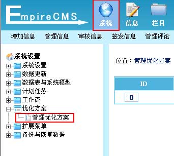
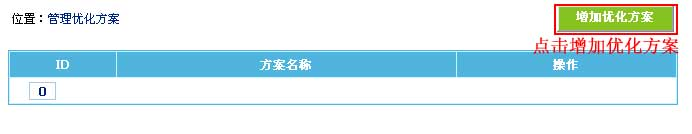
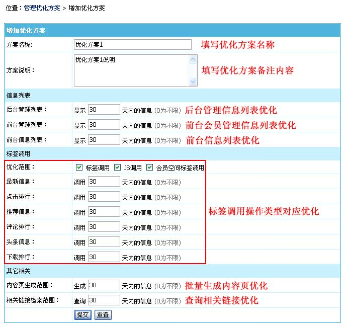
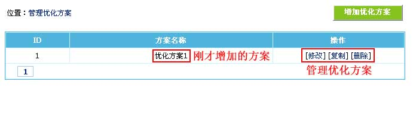

| 一、优化方案介绍： | |
帝国CMS的优化方案功能有以下特点： (1)、可指定后台管理信息范围； (2)、可指定前台会员管理信息范围； (3)、可指定生成信息列表和前台动态信息列表显示范围； (4)、可指定标签调用信息范围； (5)、可指定JS调用信息范围； (6)、可指定会员空间调用信息范围； (7)、可指定内容页生成范围； (8)、可指定相关链接检索范围； (9)、可按数据表、栏目、专题、标题分类等设置使用相应的优化方案。 |
| 二、增加优化方案： | ||||||||||||||||||||||||||||||||||
| (一)、登录后台，单击“系统”菜单，选择“管理优化方案”子菜单，进入管理优化方案界面： | ||||||||||||||||||||||||||||||||||
|  | ||||||||||||||||||||||||||||||||||
| (二)、进入管理优化方案界面，点击“增加优化方案”按钮进入增加优化方案界面： | ||||||||||||||||||||||||||||||||||
|  | ||||||||||||||||||||||||||||||||||
| (三)、进入增加优化方案界面： | ||||||||||||||||||||||||||||||||||
|  | ||||||||||||||||||||||||||||||||||
|
||||||||||||||||||||||||||||||||||
| 三、管理优化方案： |
| 1、增加优化方案后，返回“管理优化方案”界面： |
|  |
| 四、优化方案的使用： |
| 1、增加数据表时指定优化方案：按表或按模型显示信息列表或标签调用时使用。 |
| 2、增加标题分类时指定优化方案：按标题分类显示信息列表或标签调用时使用。 |
| 3、增加栏目时指定优化方案：按栏目显示信息列表或标签调用时使用。 |
| 4、增加专题时指定优化方案：按专题显示信息列表或标签调用时使用。 |